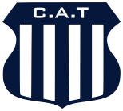
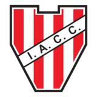
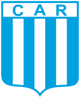
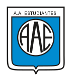

Club Atlético Talleres

El Club Atlético Talleres es una institución deportiva fundada el 12 de octubre de 1913 y en fútbol
participa en
la Primera División Argentina. Es apodado como "El Matador", "La T" o "El Albiazul" y su estadio "Francisco
Cabasés" más conocido como "La Boutique" se ubica en Barrio Jardín, tiene una capacidad de 18.000
espectadores,
actualmente es utilizado para los entrenamientos del plantel superior y algunos partidos de la categoría
Reserva. Debido a su gran convocatoria, el equipo juega de local en el Estadio Mario Alberto Kempes.
Más información sobre la T acá
Club Atlético Belgrano
 El Club Atlético Belgrano es un club deportivo fundado el 19 de marzo de 1905 y en fútbol participa en la
Segunda División Argentina. Es apodado como "El Pirata" o "La B" y su estadio "Julio César Villagra" más
conocido como "El gigante" se ubica en Barrio Alberdi, tiene una capacidad de 32.000 espectadores.
El Club Atlético Belgrano es un club deportivo fundado el 19 de marzo de 1905 y en fútbol participa en la
Segunda División Argentina. Es apodado como "El Pirata" o "La B" y su estadio "Julio César Villagra" más
conocido como "El gigante" se ubica en Barrio Alberdi, tiene una capacidad de 32.000 espectadores.
Más información sobre la B acá
Instituto Atlético Central Córdoba

Instituto Atlético Central Córdoba es una institución deportiva fundada el 8 de agosto de 1918 y en fútbol
participa en la Segunda División Argentina. Es apodado como "La Gloria" y su estadio "Juan Domingo Perón" se
ubica en el Barrio Alta Córdoba, tiene una capacidad de 32.600 espectadores.
Más información sobre La gloria acá
Club Atlético Racing

El Club Atlético Racing de Córdoba es un club deportivo fundado el 14 de diciembre de 1924 y en fútbol
participa
en la Liga Cordobesa. Es apodado como "La Academia Cordobesa" y su estadio "Miguel Sancho" se ubica en
Barrio
Nueva Italia, tiene una capacidad de 15.000 espectadores.
Más información sobre La academia acá
Club Unión San Vicente
 Unión San Vicente es una institución deportiva fundada el 24 de febrero de 1980 y en fútbol compite en la
Liga
Cordobesa. Es apodado como "El naranja" y su estadio "La Talquera" se ubica en Barrio San Vicente, tiene una
capacidad de 4.200 espectadores.
Unión San Vicente es una institución deportiva fundada el 24 de febrero de 1980 y en fútbol compite en la
Liga
Cordobesa. Es apodado como "El naranja" y su estadio "La Talquera" se ubica en Barrio San Vicente, tiene una
capacidad de 4.200 espectadores.
Más información sobre El naranja acá
Asociación Atlética Estudiantes

Asociación Atlética Estudiantes, también conocido como Estudaintes de Río Cuarto es una entidad deportiva
fundada el 21 de septiembre de 1912 y en fútbol compite en la Segunda División Argentina. Es apodado como
"Celeste" y su estadio "Antonio Candini" se ubica en la ciudad de Río Cuarto, tiene una capacidad de 12.000
espectadores.
Más información sobre El celeste acá